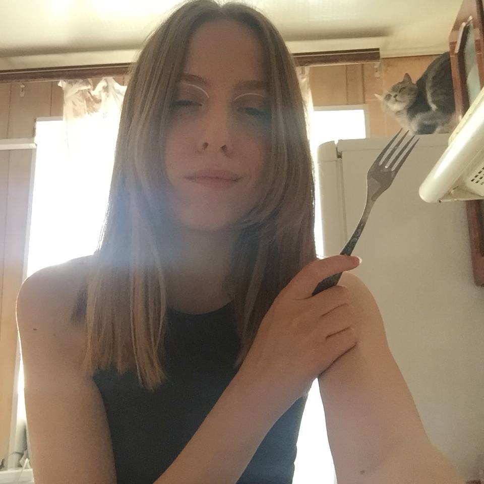
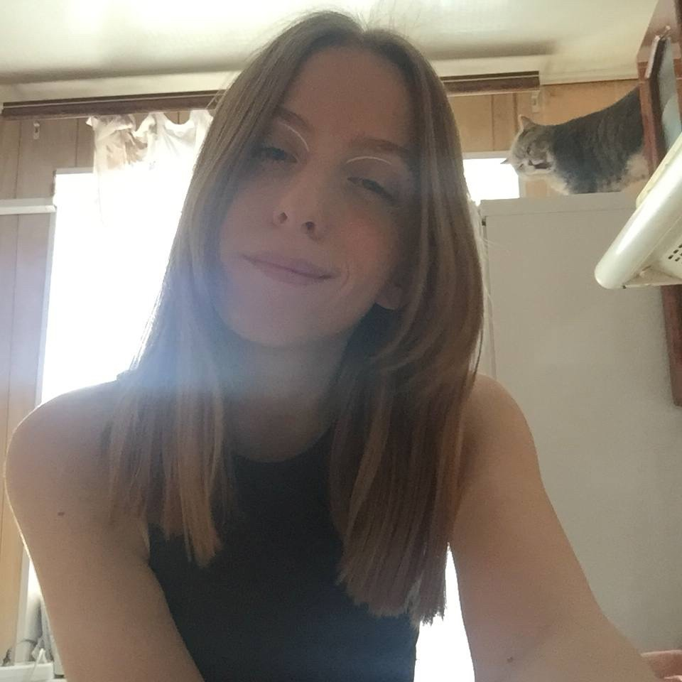

Просьба остерегаться кофейщика. Если увидите человека, похожего на данного преступника сразу сообщите в органы. Имеет особую любовь к животным (не только потребляет кошатину, но и использует шерсть пострадавших для утепления своей одежды).


Previous
Next
Далее